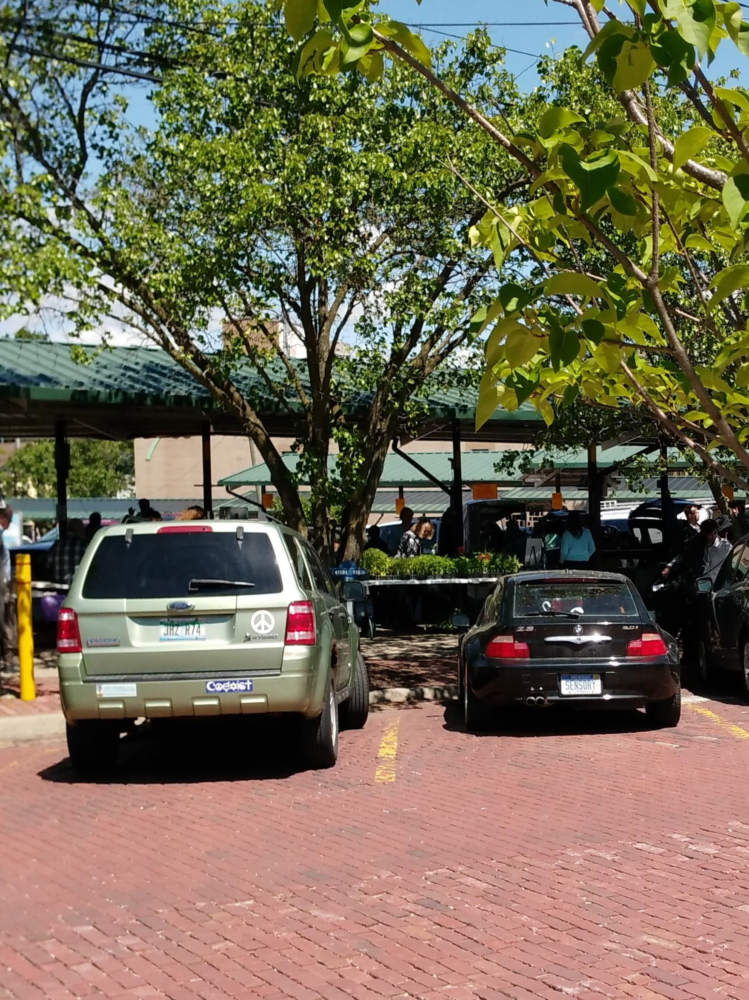

The Finer Details: Golf R
February 15, 2023
I havean unabashed crush on the Mk7 Golf R, but the clutch travel is too long.
The Finer Details: Audi Q5
January 24, 2023
By mistaking one week for another on my cluttered calendar, I unintentionally squirmed my way out of an entire week of work. My only retribution? “That is your bad.”
Just as well, though, because one the most meaningful interactions I’ve had as a detailer was in store for me upon my return, surely a positive omen for my final months in Pittsburgh.
The latest-model Q5 (Type 80A) is just another MLB car. Like others have noted about MQB cars, although to a lesser extent, MLBs each share a certain quality that makes the family lineage incredibly apparent. Empirically, they all share a pedal box and a windscreen. I feel like the engine start button has something to do with it too, even though the Macan, which is certainly identifiable as an MLB car, definitely doesn’t share a start button with its platform-mates. Certain other tactile aspects tell me a car is an MLB as well, such as the low-speed steering calibration and the general ergonomics of the dashboard. The Q5 is no exception. It feels comfortable, familiar.
With my incredibly short and uninvolved punishment over, my boss sent me out to retrieve the Audi Q5 a woman had just dropped off.
I’m actually quite a fan of MLB Evo, despite its ubiquity. The A4s, RS5s, Q5s, and Macans (not Evo, I know) I’ve spent time in have all delighted me with their build quality, thoughtful ergonomics, and ruthlessly competent (if undramatic) driving character. This particular Q5, a 2020 model, was finished in a beautiful, though slightly orange-peel-y, approximation of British Racing Green with a tan-over-brown leather interior. Audi leather has a very particular smell, I think. It causes me to recall unusually vivid memories of my father’s A4 Avant that was around for my childhood, the sort of memory association that more often comes with music. Like how each of the peaks and troughs of my freshman year of college are inextricably tied with one song or another on Circles.
The Q5’s owner had the grace to make some polite conversation as I prepared to take it inside. I offered a simple “nice car,” and she said that although she was selling it to make room for a new Mercedes, she was going to miss it. She ordered it in green, she said, because her son’s favorite color was green. She said it reminded him of nature, helped him appreciate the vivaciousness of life.
I didn’t really take note of the past tense, nor of the California plates, until my boss asked a peculiar question:
“Do you know who that was?”
Later that week, after she and the Audi departed with a smile and paintwork glimmering alike, I was made aware.
“That’s Mac Miller’s mom.”
The Finer Details: BMW X6M
December 15, 2022
I have nothing but disgust for the current X6M, although my friend’s mom has a last-gen X5M which I love. Where did they go wrong? This X6 had the finickiest keyless entry system, infuriating seat controls, a claustrophic, plastic fantastic interior (with admittedly very nice leather seats), and several manufacturing flaws. Maybe it was a lemon, but one of the headlight assemblies was full of condensation, the paint had thin spots everywhere, the speaker grilles all had mis-machined holes, and one of the machined-face wheels had clearly been off-axis when it was lathed. On a six-figure car.
Also, look at it. Ugh.
The Finer Details: Modern Benzes
December 15, 2022
Today, we had both a current-gen E400 wagon and a current-gen GLE350. I was astounded how much better assembled the E-class was, with better-feeling materials more precisely installed in more thoughtful places. At parking lot speeds, the transmission and steering also felt better-calibrated. These vehicles occupy the same stratus in Mercedes’ lineup, and the GLE actually costs more. Perhaps it has something to do with the Alabaman assembly of the GLE, while the E is built in Germany?
The Finer Details: Mercedes-Benz SLS AMG
December 15, 2022
"Holy shit."
Today I arrived to an already-detailed SLS in the paint correction bay. I don’t know if I’ve ever even been near a car with so much presence. Its hood has the size and proportions of a soccer field. The leather upholstery is a deeper red than blood. The whole thing has this Teutonically serious, monolithic sense about it, and yet it is supremely elegant. I can only imagine the feelings an original 300SL must inspire.:
Also, cold-starting it sounds like the later stages of a particularly dramatic apocalypse.
The Finer Details
December 15, 2022
Welcome to “The Finer Details”, a running series of bite-sized car reviews, focused on the thoughtful (or thoughtless) engineering touches that I discover in my daily work as a detailer.
We'll start simple:
Today I was prepping the exterior of a blue 2017 Lexus RX350, and I couldn’t stop thinking to myself, “this thing has incredibly rich paint.”
Life Through Windshields
May 9, 2022
1: 1992 Acura Integra, LS two-door hatchback, 5-speed manual, Premium White Pearl
I remember, somehow, sitting in my tan suede car seat in the front of my dad’s Integra at barely three years old, turning the corner, south to west, of 3rd and Madison. The Sony Discman cradled in the center console was playing The Future Sound of London’s experimental trip-hop project Lifeforms, which can’t’ve been healthy for such a young mind. I asked my dad what the word “coincidence” meant. It had come up in conversation but I can’t remember how. He told me that sometimes things may seem related (his exact words may have been “shit happens”), but that I ought not to worry about it. That night, as was often the case, he put me to bed by reading me a part of The Tao of Pooh.
“The white car” eventually fell victim to good old Michigan rust. Besides, it had trouble making it up hills at the slightest hint of snow.
2. 2000 Audi A4 Avant, 1.8T Premium quattro, 5-speed manual, Onyx Leatherette interior, Light Silver Metallic
One day after dinner, my mom took me to the ice cream parlor up the street, a humble and inviting brick time capsule from the 1930s called the Washtenaw Dairy. I wasn’t allowed to get Superman ice cream, which upset me at the time, but which I now recognize was a wise parenting choice, one to which I may owe my palette. At four years old, though, I wasn’t used to being out after dark, and I was quickly pacified by the novelty of the crickets and the stars. When we rounded the corner, half a block to the house, I saw an unfamiliar car, the sunflowers in the front yard diffused with the taillights’ red glow. My dad was back from Texas, with his new-to-us Audi. The next week, I stuffed a handful of pennies in the CD player. $1200 (and however many cents) down the proverbial drain.
My mom hasn’t driven since the early 1980s, when she had a Volkswagen Cabrio to commute from the family farm out by the Air Force base into the city for college. She makes even the smallest decisions with obsessive rationale, a process far too cumbersome for the safe operation of an automobile. Besides, she’s an urban planner. To her, perhaps rightly, the future is post-car. Still, she had a particular fondness for this German station wagon, which had 6-setting heated seats with adjustable lumbar, an 11-speaker Harman/Kardon stereo, and a huge sunroof. I know almost nothing about my mom’s inner life, but her fondness recalling the ride quality of the Audi is telling. Of what, though, I don’t know.
I don’t identify very closely with my childhood, but this sleek, neo-bauhaus, all-wheel-drive family car was in my life for solidly ten years. A lot changed from ages four to fourteen, but this car didn’t. It didn’t get rewarded for not relating to its peers, choosing to bring a shoebox full of books to summer camp instead of a frisbee or a baseball glove. It didn’t have its brand new bicycle stolen at its sixth birthday party. It didn’t slide into private middle school on a wave of blind privilege, or get through it as a C student on a combination of procrastination and good test scores. It didn’t have a queer-awakening crush on Hazel, even though everyone else did, and it didn’t even befriend Laura when Hazel abandoned us both for some exciting new love interest. It didn’t even argue to the bitter end, whether out of spite or out of real attachment, to go to Community High School (go Rainbow Zebras!) instead of Pioneer. It just chugged along, sipping 93-octane and reciting Bach’s Goldberg Variations in hi-fi. And, of course, it coddled my mom in isolated material luxury on the way to her job professing the evils of private car ownership.
“The silver car” had a habit of shearing its tightly-toleranced aluminum front control arms clean in half, usually the fault of those cavernous Detroit-area potholes. At $400 apiece, plus labor, this eventually grew tiring. My dad sold it for $1200, pennies on the dollar, not knowing that the enthusiast market for manual-transmission 1.8T cars would absolutely explode just a few years later. I guess it at least made up for my stereo incident. The buyer arrived to get it in an Acura Integra, early nineties, two-door hatchback, LS trim. It’s the circle of life.
3: 1984 Ferrari 288 GTO, 5-speed manual, 1 of 272, Rosso Corsa
Since my dad went to Yale in the seventies, many of his friends could be most charitably described as unfairly, unendingly, unbelievably, absolutely disgustingly stinking rich. Thankfully, despite my fearful perception of money as a destroyer of emotions, many of them are somehow also rich in character. I suppose this follows, because while it sometimes makes him standoffish, my dad is always trying to be present and aware, no matter how convoluted his justification may become as he tries to get there. Many of the people he surrounds himself with either do the same, or are able to meet him there in conversation. Sometimes he recalls his youth in a sadistic kind of glee, painting himself as a struggling hero clawing through the grit of New Haven. Drawings from his undergrad years are scratchy in a way that makes the paper itself look sleep-deprived. The characters all have long necks and wide, strained eyes. He likes to use the word “starving”. I think he was just depressed.
His freshman roommate, Mark, also seems like he may retreat to depression when I am not around to see it. He is very gentle in conversation, as though he is afraid of saying something he really means. Drawings from his undergrad years are flatly colored and geometric (and often of Dutch barns), devoid of any telling detail. His laugh, though, is thunderous. It’s loud and deep enough to make it, seemingly undiminished in both levity and volume, across the vast living room of the original Bernard Maybeck mansion that he calls home on weekdays. Weekends, of course, are spent on the Roos Ranch, a 240-odd acre tract of northern California just down the road from George Lucas’ Skywalker Ranch, nestled among the redwoods, pockmarked with dandelion-strewn clearings and dirtbike trails. The house itself, built by successful prospectors in the 19th century (Mark’s ancestors), features cold cobblestone floors beneath sixteen-foot vaulted ceilings, an utterly modern kitchen with light from the wheatgrass meadow spilling into it through towering floor-to-ceiling windows, and, critically, an eight-car garage, where I first met him. While my ego was flowering at the lovely age of eleven, I could still be shut up by a few things. One of those things, as it turns out, was a Ferrari 288 GTO.
To this day, I have only seen that car twice, but I was actually allowed to drive it several yards the second time. I will remember the sounds forever: the click-clack of the gated shifter, the whistling journal-bearing turbos behind my head, the sticky tires slinging gravel, pattering like raindrops, into the carbon-kevlar underside. Despite its value and its outward presentation, I don’t consider this car to be a material luxury. It is an emotional luxury. Mark always said he used that car to meditate, that driving it made him feel more present, more emotionally honest. Even as a passenger, it brings so many feelings so close to you. You can relate to it, to its creators, to the road beneath you and the trees around you, to yourself in a new light. It’s expressive, and it’s intense. For whatever reason, I associate Mark’s old 288 with Laura. I suppose it’s an issue of timing. I first saw it at the beginning of our friendship, and again just before the end. Perhaps it’s also an issue of expression, that I saw some secret part of Mark come out when he drove that car, one that reminded me of her. And intense experiences will stick around. Perhaps it’s intensity.
Mark sold “the fast red thing” towards the end of 2019 for some two-and-a-half-ish million dollars. He said he didn’t use it enough. I would bet as much money that the new owner uses it even less, if at all. Money, after all, is a destroyer of emotions.

4: 2001 Honda Prelude, base model, 5-speed manual, AP1 wheels, Ficus Green Pearl
I only spent $2500 on my first car, but it took a while to come across that kind of money as a fourteen-year-old. That’s 250 hours bagging groceries at Sparrow’s, or basically the whole school year. In another stroke of timing, what could be called a coincidence (although I never would’ve admitted it), this rusty green coupe would be the catalyst to propel me into my new, high school self.
In Michigan, you can get your first driving permit at fourteen years old and nine months. Predictably, I got mine March 18, the very day I was allowed to. On March 21, holding an envelope full of cash, mostly twenties, I begged my dad to drive me the hour west to Marshall, through the snow, where I bought a tired old Honda Prelude that I had already decided to name “Wallace”. I don’t remember why I picked it, but I still think the name suits the car, or at least the color.
In the six months (to the day, somehow) between buying Wallace and my last time seeing Laura, I spent most days between the end of class and the beginning of crew practice fixing it up. I got new brakes all around, rotors, calipers, lines, everything. I replaced the VTEC solenoid, put a new exhaust on it, found four front wheels from three different S2000s, which I thought looked much better than the very 90s-tastic stock pinwheels, replaced the whole ignition system, patched up the leaky power steering lines, everything. Everything except the bountiful rust, I suppose, which I just hastily covered up with some Bondo and a spray can of Chrysler dark green that was almost the same as Honda’s.
When I wasn’t working on it in my rented garage bay behind a church, I was (allegedly) making many of those lasting adolescent memories in it. I drove my best friend Jonah home from school on rainy days, raced it down the curvy road north of town on sunny ones, and found obscure places to pull over with an early high school girlfriend at night. I once stuffed seven people into its four seats to skip class and go swim in the river. The radar detector I had invested in paid itself off in weeks. Towards the beginning of my sophomore year, after a traditional late night smoking and playing music in Jonah’s parents’ garage, I went home just to find myself locked out. To a fifteen year old, this was an opportunity, not a setback. I called Laura. She was always up late, but more importantly, she lived on one of the few hills in the whole state. I could coast my louder-than-was-polite sports car downhill, all the way to her house, in blissfully discreet silence. We were up long enough eating ice cream and giggling at crude jokes on TV that I can’t remember falling asleep. I woke up with my head on her shoulder, sharing the cramped basement armchair with her, her laptop quietly wondering if we were still watching. Not wanting to wake her, I left without saying anything.
Seven months after that, seven months of cursing broken EGR valves and sheared wheel studs and ever-growing rust, seven months of cathartically driving like I wanted to crash, I realized that I could just adopt hedonic solipsism as my general outlook on life, and I sold Wallace.

5: 2008 Honda CRV, EX-L AWD, 5-speed automatic, Crystal Black Pearl
Jonah is both scrawny and scruffy, an incredibly talented musician, and often visibly stoned. He lived about a half-hour walk from school, in a nice post-war semi-urb by the river, with (at the time) his parents, his older brother (since moved out), and three (now two, unfortunately) very characterful dogs. His parents are both retired lawyers, his dad a very large, tattoo-covered, MF DOOM-listening, pipe-smoking real estate agent, his mom a very small, quiet, spiritual, homeopathy-loving yoga teacher. His brother lives by the motto “lift weights and eat whatever you want”. Together, they’re the most charismatic and personable family I have ever met. Jonah and I spent most of high school together; his family is almost as much mine as it is his.
Since we were in the same forum, which is like homeroom for hippies, we’ve known each other since the very beginning of high school. For the first year or so, we didn’t spend that much time together, but he was always friendly and very funny. I was invited to his birthday party at the end of the school year, which is the only time I ever saw his family’s kitchen before they renovated it. It was also the first time I smoked weed. I remember sitting under the huge oak tree in their backyard, listening to Jonah and his friends Danny and Clarence play the old jazz tune “You Look Good To Me” in the dark. I’d never been so mesmerized.
We didn’t see each other all summer, and September was a dissociative blur. By mid-October, Jonah had started dating Andrea, with whom I had usually been eating lunch, and I had at least accepted Laura’s death. We spent nearly every hour of nearly every single day together for the next three-and-change years, from our ritualistic coffee before school to our suspiciously giggly goodbye in the wee hours of the morning, stopping only for jazz rehearsal in his case and crew practice in mine. At sixteen, once he had his real license, and like most other kids I knew, he got a hand-me-down commuter car. I stopped driving him home after school; we just took his car, since Andrea, Clarence, and Danny could fit too.
My sophomore year concluded, dramatically, with a walk down the shore of the racecourse at the Canadian national high school rowing championships. I wasn’t very successful that year, but as I was listening to Jamie XX’s “Gosh” in my still-new wireless headphones, staring almost right at the sun, when it hit me: there was nothing I could do about Laura. She had been there for me when she had been, I was who I was, and part of that was because of her. The same could be said about her absence, because either way, all I knew about her was what I thought and felt. All I knew about anything was what I thought and felt. Jonah picked me up when the bus arrived back in Ann Arbor, and I told him all of it. Or most of it.
We’ll both be twenty-one in a month or so. He still has his “shitpile old CRV”, but that’s about to change. I still haven’t ever talked to him about Laura.
6: 2004 Subaru Impreza, 2.5tS, 5-speed manual, Pacifica Blue Pearl
I was sitting in my girlfriend’s hand-me-down Subaru outside her parents’ house, listening to Alexander Murdoch, holding hands, talking about which college she would attend and what we were going to do about it as a couple. Hazel called me. “Laura jumped off a parking garage last night.”
7: 2015 Mazda Mazda6, Sport, 6-speed manual, LSD, Katzkin tan heated leather seats, JL 350W 7-speaker stereo, Snowflake White Pearl
Laura was one of three real friends I had in middle school. I knew this kid Noah from elementary school, who introduced me to Hazel. Hazel and I hit it off right away. Not only could she put up with my 11-year-old ego, we actually got along. We loved the same music, the same books, the same parks in town. Her parents even knew my parents from working together once. She also enjoyed taking me out shopping, because I certainly hadn’t figured out how to dress yet. We learned how to skateboard together, and how to play guitar. I was in the science olympiad with her twin brother. At some point, she got glasses and cut her hair really short, which I can only assume is when I started crushing on her. By eighth grade, on the class retreat, we were talking about it. We talked a lot, because she was one of the few middle schoolers familiar enough with things like depression, sexuality, and gender to be comfortable talking about them. Her mom’s a therapist. I realized on that same retreat that I was queer.
Hazel, in turn, introduced me to Cammie and Laura. Cammie, like Hazel, carried a lot of social capital, was very sure of herself, was a little depressed, and was quite pretty. She claims I taught her the word “pacifism”. When she and Hazel started dating, they became the first people at the school to come out as queer. They also left Laura and I to our own devices at the lunch table. Laura was shy, but witty and eloquent when she did speak. She didn’t speak to me often, though we did share laughs and knowing looks, until Hazel got too caught up with Cammie to talk to either of us.
The first thing Laura and I ever really talked about was Hazel. I remember because she knew about my crush. It was pizza day in school, we were in line together, and she leaned over with no warning to ask quietly: “You like, like like Hazel, right?” I replied, and she shrieked that she did too. Thankfully, no one had heard the context. As shrieky as she had once been, I found Laura incredibly easy to be quiet with. Being quiet with her was like being alone, but with more hugs. Being loud with her, or as loud as she got, was like being alone, but on drugs, or perhaps with a journal. Either way, we learned a lot about ourselves together. Notably, we were scared of the future together.
Once he decided to move on from the Audi, my dad was quick to rope me into the car-buying process. I’ve always been a car obsessive, since before I can remember. My first word was “truck”. When I was a toddler, I never learned how to crawl properly because I was always pushing around a foam Volkswagen Beetle toy, using it as a kind of crutch. By the time I was thirteen, I had seen every episode of Top Gear and then some, I had my own Car and Driver subscription, and I could list just about every car on sale in the US and most of their basic stats. By the time I was thirteen, I was also opinionated. We were probably just about the only three-person midwestern family cross-shopping used turbo BMWs, Mk6 Golf Rs and Mk7 GTIs, WRXs, Outbacks, Mazdas 3 and 6, Accords, and Volvo station wagons. My mom wanted a Mercedes E-Class, since it had (you guessed it) great speakers, great seats, and a huge sunroof. I wanted a Subaru BRZ, because I knew I would get to drive whatever we ended up with in a few years. Still, my dad got a Mazda6 with as few options as possible. I think he was overreacting to owning a complex German car, but I must admit, the Mazda is a sublimely elegant piece of engineering. He had heated leather seats and a nice stereo put in it after the fact to appease the Benz crowd, and a Wavetrac limited-slip differential and better tires to appease the BRZ crowd. If there’s one thing he can be most sure to say about my mom and I, it’s that although our motives can be mysterious, we’re very stubborn.
The advent of “the big car”, as it came to be known, just about coincided with the eighth grade retreat, and it was the car that shuttled Laura, Hazel, Cammie, and I to the airport. A lot of shit happened. Our geometry teacher got in a car crash minutes after we landed in Miami, which may have just been an excuse to hang out by herself in Miami. One of the more popular kids hugged a statue of Christ that we found while we were snorkeling, and it was so covered in fire coral that he had to go to the hospital. Hazel and Cammie broke up. Cammie got caught crying in a hot tub. Laura and I decided to stop talking to Hazel. She had problems with accountability (she still does). We spent the rest of the trip being scared of the future together, wondering what high school would be like, wondering if we would both get into Community, divulging our last secrets just in case we didn’t. On the last day, we sat together on the bus back to the airport, sharing a key lime milkshake and a pair of earbuds. She convinced me to get Spotify Premium after she made a playlist for me, and she also convinced me to start wearing sunscreen after I fell asleep from sun exhaustion.
Laura didn’t get into Community. “The big car” didn’t pick us up from the airport.
8: 2011 Ford Escape, hybrid, CVT, Kiwi Green Metallic
I first thought I loved Marika (whom Jonah had actually dated freshman year of high school, a fact that all three of us occasionally recalled cheerfully) when, after one of those long nights at Jonah’s, we were sitting and chatting in the back of her car, and she put on “Gosh” by Jamie XX. It turns out I was wrong. It was, after all, just a coincidence that she liked the song. While we dated for two years, give or take a couple temporary breakups, I did not love Marika. I never let her worldview affect mine, never gave her understanding of life the credit it deserved. I was afraid to, because when I lost her, when we inevitably broke up, it would change me. So when she asked why I was distant, I would believe I wasn’t.
Marika was cute, both to look at and to talk to, and loved very intensely. “Carika” reflected this character very well. She always had the back seats folded down, with drug rugs curtaining the windows, fairy lights dotting the ceiling, and incense in the cupholders. That car hosted intense conversations, was a sanctuary for many friends in emotional turmoil, and was a rolling venue for smoke sessions, jam sessions, and truancy sessions. The longest single drive I have ever done was in that car: thirteen hours in one sitting, Boston to Ann Arbor overnight. I found the car to be slow in its responses and vague in its feedback, but nice-riding. Marika slept in the passenger seat most of the time. I miss looking over at her and wondering how she could show so much trust in her closed eyes.
A year later, we sat across from each other in the front seats and broke up (for real this time). She cried so hard her nose started to bleed, and I am pretty sure the driver’s seat still carries that stain. Sometimes, when Marika loved so intensely that I couldn’t even make myself empathize, I would think: My nose never bleeds from crying. Am I being accountable? Am I being like Hazel?
I have no idea where “Carika” is today. I haven’t spoken to Marika in about a year and a half.
9: 2018 Tesla Model 3, Dual Motor, direct drive, FSD, Solid Black
Fia vehemently believes that you shouldn’t wash any pocketed clothing. Pretty much anyone who knows what they’re talking about will tell you that the key to happiness is presence and humility, but those same people will probably also say that you should do your laundry.
One of the things I love most about her is her incessant storytelling. She may not always realize it, but each time she speaks, moves, sees, hears, or sits, she is recalling a story in a new and meaningful way. Even if she can’t always articulate it, no one I know understands the elegant churn of life better than she does. To her, each and every little thing around her is a passing identity, something her self-conception can reach out and touch, something that recounts a new little story to her. She tells me her clothes make her feel like an archeologist. To her, love can spawn from neglect, and ignorance can garner attention. She says the polaroids from our day trip to Grand Haven nearly three years ago are all the more meaningful to her now that you can barely see our faces, washed out by sand, sun, and salt water. When I ask, she lists the contents of her old, patchy overalls: firefly-shaped beads, a plastic magnifying glass, marbles (two small and one large, all blue-green), an unopened honey stick, a mother-of-pearl butterfly charm, and a thumbnail slide of some random family skiing. She then goes on a little tirade about how much joy the slide brings her. It is the last thing she got from our mutual friend Katie before she moved to Rome.
Five years ago, before Fia taught me how to relate to things like lakes, I found myself sailing a lot. I was participating in a pre-college program at Northwestern University in Evanston, my dorm fronting right onto Lake Michigan itself. No wonder I would retreat to the helm of an FJ every afternoon, then. FJs, or “Flying Juniors”, if you aren’t familiar, are 13-foot fiberglass racing dinghies that date back to the mid-fifties. Traditionally, they are sailed with an additional hand manning the foresails. Ella, my friend behind the boathouse concierge desk, would often question my decisions to single-hand the Eleanor Roosevelt (my particular favorite FJ, on account of its stubborn unwillingness to accept the typical purple-on-white NU sails, instead flying red, white, and blue Dacron that must have been forty years old) in less-than-ideal weather. I usually joked that my little waterproof speaker was company enough. On one particularly choppy day, though, I capsized the Eleanor Roosevelt. Dacron sails are heavy when they’re wet, and even in July, Lake Michigan is hardly warm. Walking back from the boathouse, cold, wet, and visibly tired, I passed some of my classmates, people I had yet to really introduce myself to.
“Hey! Come swimming if you’d like?”
“He just went. Leave him alone.”
A tall, well-dressed, friendly-looking person detached herself from the group. She had shoulder-length black hair, one side clipped up with a little white butterfly charm. Laura used to do something similar. She apologized, perhaps needlessly, for the others. Laura would have too. She proceeded to talk my ear off about how her best friend in high school had started a band solely because of the song I was listening to, and as she became more and more distant from this more and more popular friend, how she grew to appreciate the unfamiliar a little bit more each day. I was reminded of Hazel. By the end of the next day, exhausted from double-handing the Eleanor Roosevelt, we fell asleep eating ice cream and watching crude comedies on TV together.
Fia doesn’t have a car. The Tesla was just a rental we used to get to and from her aunt’s house in Novi for a week.
10: 2017 Honda CRV, EX-L AWD, CVT, White Diamond Pearl
When we first talked about it, probably a year into our friendship, Fia asked if I ever thought I had a crush on Laura. I don’t think I did, but I’ll never really know. I wonder if Laura would’ve become like Fia to me, or like Lily.
Until fifth grade, Jonah went to the Hebrew Day School of Ann Arbor. I honestly don’t know much about it, except that it’s where he met Lily. He went to the local public middle school, Lily went to the other private middle school. Jonah came to Community, Lily went to Skyline. Then, Jonah invited us both to his 15th birthday. For the years that followed, Lily and I always shared a distant admiration for each other. Lily always felt like she knew what was on Jonah’s-friend-Cal’s mind. I often felt the same, but I also thought Jonah’s-friend-Lily was very, very pretty. She carried a lot of social capital, was very sure of herself, and was a little depressed too. She claims I taught her the word “dispossession”. She didn’t speak to me often, though we did share knowing looks across the garage table and a veritable encyclopedia of in-jokes. Life was easy. I definitely had a crush.
The cold, late-February night before my chemistry midterm (a class I was taking at UMich, still under the illusion that if I was academically successful and secured a financially lucrative engineering career, I would be happy and fulfilled), I gave up studying at around 10:30pm, got into the big car, and lazily drove the two miles to Jonah’s. I was already in the habit of showing up unannounced; no matter who was there, I was always welcome. Danny’s blue Jetta (a diesel stick shift station wagon, actually very cool) and Lily’s white CRV were parked next to the patch of dead bamboo in the front yard. I figured I would stay for an hour or two, maybe smoke a little, and make it home in time for a good night’s rest before my exam.
It definitely has that certain suburban midwestern soccer mom kinda nothing, the fifth-gen CRV. White is even the nothing-est color. I, like anyone else would in this part of the world, probably see thirty or forty white CRVs each day. I (unlike anyone else would, anywhere) take note of every single one. I know Lily’s car’s driver’s-side lower door trim is falling off. I know her license plate. I even know Lily is hundreds of miles away. I don’t think about it. I’m too focused on looking for her in every late-model white CRV I see. I’ve spent too many nights crying with her in that car not to.
I walked the length of the driveway wondering why, through the living room window, I could see Lily, Danny, Jonah, and Jonah’s dad all crowded around the little table in the corner. I crouched under the halfway-open garage door, pet the dogs in the mudroom, gave Jonah’s mom a wave as I passed through the kitchen, and eventually laid eyes on the scene in the living room. Danny had a simple proposition: “you wanna do shrooms?” It was our first time; we made tea with lemon and honey and about an eighth each, ate some pasta, and embarked on our usual riverside walk. Despite the cold air, the dark skies, and the barren trees that all come with February in Michigan, we were all entirely bewildered. Stumbling over our words and each other, we eventually collapsed on the little dock above the dam, one homogenous pile of four people. The conversation slowly slipped from giggles and comments about the purple sky and chromatic aberrations (“the Versace underwear thing”, Lily called it) to how nice it was to have friends like this (and what if we didn’t), to how close was too close to the edge of the dock, to the meaning of impermanent relationships, and eventually to mortality. When we made it back to the house, we were exhausted, a little confused, and maybe a little stressed. Jonah and Danny went upstairs to play music, while Lily and I sat down in the backyard with the dogs.
In a long, long instant, we stopped being Jonah’s-friend-Lily and Jonah’s-friend-Cal. We fell in love. Jonah and Danny never came back downstairs (it turned out Jonah had a panic attack about college applications). Lily and I never went back inside (we were too busy professing how meaningful we found each other’s little moments of recognition). Jonah eventually slept, and his dad drove Lily and I to her house, where we went up to her room with a half-eaten carton of ice cream and watched a crude TV show until we fell asleep. We got up early and walked back to get Lily’s car. She drove me to my exam. I aced it.
Since then, Lily’s is the only friendship of mine where we admit to being in love. When we moved to college, we started a collaborative playlist to soundtrack our alternate-universe love affair. We’ve never hooked up and won’t ever date, but there’s an air of romance. A mutual sympathy, bittersweet. It’s a special kind of trust. I wonder if I found the same thing when we stopped being Hazel’s-friend-Cal and Hazel’s-friend-Laura.
Lily still has “Tofu”. It’s one of the safest-feeling places I can think of.
11: 2011 BMW Z4, sDrive35i Premium Package, 7-speed DCT, Coral Red interior, Titanium Silver Metallic
I had actually only met her once when I decided to fly to California for the first two weeks of a road trip with Fia’s roommate Zoe. I arrived a few days before Fia, and planned to couch surf around San Francisco, visit my uncle, some old family friends, and a few new friends from college. I was 19, though, and had to do it in style. A silver BMW convertible was waiting for me in the Westin parking lot, complete with a riotously powerful twin turbo inline-six, conspicuous red leather seats, and a trunk that couldn’t fit my duffle bag when the roof was down. No matter, though. I tossed it in the passenger seat and embarked northward towards the Golden Gate.
Five days alone in San Francisco was nice. It was a chance to really explore, unencumbered by the needs of another traveling companion. I stayed with family friends in Oakland, with my uncle in the hills off Highway 9, and got to see my friend from school, who met me with his Miata at one end of a twisty road and played frisbee with me on the beach at the other. Still, though, it got a little lonely, so I went to Zoe’s a day early.
We drove around Palo Alto as she gave me a tour of her childhood, telling impassioned anecdotes about each place we passed: the taco truck that would give you free shots, the golf course she threw up on after prom, the Indian restaurant where she found out her girlfriend was cheating, the private park she and her sister would sneak into to find respite from their parents. Between spots, she punched my shoulder until I drove fast enough to whip her hair around her face, and then punched my shoulder until I slowed down enough so she could see again. Eventually, we stopped at an ice cream parlor, her friends’ favorite spot to meet after high school. We stood in line for way longer than we should’ve, talking about meaningful nothings from our lives before covid. We paid way more for ice cream than we should’ve, and walked through Stanford with it, hands sticky from forgetting to eat between sentences. When we reached the observatory, on a hill high enough to see over the trees and back up to the city, I verbalized it for the first time: We were intent on self-discovery, and we saw so much of ourselves in others. To us, people were experiences, something to reflect off of, learn from, and move on.
The next morning, Zoe and I drove to SFO. She took “Franny”, her Subaru Forester, and I took the “fat Miata” back to Keith, its owner. Zoe went on to collect Fia, and came back to the Westin to pick me up a few minutes later.
12: 2014 Subaru Forester, 2.5i, CVT, Ice Silver Metallic
We spent the first week backpacking in Emigrant Wilderness, a patch of the Sierra Nevada that is particularly dear to my heart, and to Zoe’s. Fia had never been backpacking before, so we took it easy, and stayed at one camp for three nights once we were far enough in. It was a beautiful alpine lake, sandwiched between sheer granite cliffs on either side, one above and one below. The water was crystal clear and bone-chillingly cold, trout and turtles easily visible beneath the surface. We spent our days hiking, playing cards, and talking philosophy over a copy of Zen and the Art of Motorcycle Maintenance that we would read aloud to each other every morning and evening. Zen, a product of its era, had us talking about misogyny, about how maybe men view women as experiences. Zoe said her dad had taught her to be skeptical of every male friendship she had. The next night, we met a woman from Michigan at our campsite (who I now remember had eyes much like Laura’s), smoked a joint with her, shared dinner, and talked about capitalism and engineering ethics. We all agree it was a meaningful interaction, but this woman never reappeared in any of our lives. Zoe quickly claimed the coincidence was the ultimate example of a person as an experience.
The last night in camp, we climbed partway up the taller cliff and found a nice wide perch to cook dinner on. We laid out some blankets, set up the stove, and boiled some water to make tea from the shrooms I had mailed to Zoe. The night started sitting back-to-back-to-back, silently writing and drawing in our journals. I don’t know how much time passed before Zoe screamed at the top of her lungs, threw her arms up, and lied down on her back. Fia and I joined her, another homogenous pile of people, talking about how grateful we were to have friends like this, and what if we didn’t, and hey Cal you’re kinda close to the edge, and well I’m not falling off so it’s fine, and well if you did I would be sad and terrified, and well what if the way that changed you as a person ended up being good.
We drove south to Paso Robles, and spent the second week on Zoe’s family ranch. Each night we drove around and shot at beer cans until we were too drunk, sat in the back of the Jeep and talked about relationships until we were too tired, then got some ice cream out of the freezer, got into bed, and put on the TV until we fell asleep. Zoe held my hand under the covers.
12a: 2018 Subaru Forester, 2.5i Limited, CVT, Jasmine Green Metallic
The day after they dropped me off at LAX, Fia rear-ended a pickup truck in Palm Springs and totaled Franny. Zoe promptly bought another Forester, named it The Pool (so she could say “let’s get in the pool”), and resumed the long drive back to Michigan.
13: 2019 Chevy Equinox, L, 6-speed automatic, Switchblade Silver Metallic
The concierge at the LAX Fox Rent-A-Car was visibly irritated. By way of whatever internet rental car magic Zoe’s dad had used, Zoe was allowed to pick any car from a certain section of the lot, for one fixed price, without presenting a credit card for a security deposit. Despite my insistence on leaving in a Wrangler, the only remotely interesting thing there, we ended up with a Chevy Equinox. Fia hates Wranglers. When we made it out to Joshua Tree that night, after stopping at In-N-Out and bumming around West LA for a few hours, I did the one thing any reasonable person would do: in the middle of the desert, in the middle of the night, I found out how fast our rental car could go (108mph). After about 20 seconds at full throttle, the check engine light came on. What a coincidence.
By the time I had been living in Brooklyn for six weeks, I was already eager to get out. So, even though our last trip surfing in Santa Cruz for Christmas ended with anxious tears and weeks of apprehension from Fia, I decided to accept Zoe’s invitation to Joshua Tree. She and Quinn, another roommate of hers and Fia’s, were renting a cabin deep in the middle of nowhere for her birthday. It was only after a clumsy text to her that I found out Fia hadn’t planned on going. She said the way Zoe approached relationships, or at least being roommates, was selfish. She said it made her anxious to spend time with Zoe. She said Zoe didn’t take enough accountability for her feelings. She said she was worried about Zoe’s friendship with Quinn.
The trip to Joshua Tree wasn’t long, just five days, but I found it very enjoyable, in a surreal, alien way. The desert is just like that, after all. We saw a cult in a crater, lost Quinn bouldering at night, and witnessed snow on cacti. We stargazed more than I ever had before, played chess incessantly, got up for every sunrise, talked our usual philosophy, and almost bought an old truck. Fia didn’t chime in often. The cabin had one bedroom, a little outbuilding with another bed, an outdoor hot tub, and no cell service. It was great. The first night, Zoe suggested she and Quinn sleep in the outbuilding. I thought nothing of it. Fia and I were used to sleeping together anyway, so it made sense.
We don’t talk to Zoe anymore, any of us.
The Equinox’s check engine light fixed itself, but it almost got stuck on a fire road in the national park. We returned it without mentioning any of this.
.JPG)
14: 1991 Mazda Miata, Package B, 5-speed manual, BP6D swap, custom MicroPython VVT
I didn’t want to fall out with Zoe. In some ways, I actually loved her. She was easier to have a meaningful cerebral conversation with than many people I knew, and adventurous enough that I could be distracted from her flaws, most of which I heard about from Fia anyway. Still, when she cheated on Quinn, the ensuing conversations I had with her, with Fia, and with Quinn made me realize a lot. I always thought I saw some of myself in Zoe, but it’s unfortunate that we ever had to agree about treating people as experiences, about removing emotional accountability to protect ourselves, about hedonistic solipsism.
I drive a 1991 Miata now, which I’ve had since May 3rd (Jonah’s mom’s birthday) of my junior year of high school. It has changed nearly as much as I have. Or maybe more, depending on what part of the human experience you analogize engines with; it’s had two, each in two different states of tune. I hold myself more accountable to this car than to many actual people, and it pays off. We go everywhere together, and while we have our fights, it has never left me stranded. I even drove it to Minneapolis and back to see an old friend I had fallen out of touch with, in December, on a total whim. It handled it spectacularly, summer performance tires and all. I like to think I’ve learned a lot in, with, because of, and from this car. I will never sell it, even if it’s a completely different car one day. I just have to acknowledge that I’ll be a different person.
14a: 2012 Triumph Bonneville, SE 865cc, flat track build, 5-speed sequential, brushed steel
When I told my dad I was thinking about dropping out of college because changing my values to meet that environment made me depressed, he told me that I had failed him as a son. He drooled a little bit as he said it. I realize that my parents, ever stoic in the name of family function, were not the best people to learn empathy from. Never were we emotionally accountable to each other, it would’ve complicated things too much. Instead, we each conceived of each other as functions of our own existence. So when Laura died, I decided, explicitly, that she too was just a function of my own existence. To be fair, it worked. I felt happier. But, I hurt some people in the process. Eventually, I hurt myself.
After my dad’s outburst, I swung a leg over my motorcycle, and went out for a ride. Like Mark, I used it to center myself, to force myself to be more present. It didn’t work that night. When the red-and-blues came on behind me, I didn’t stop. It wasn’t a coincidence.
I sold the Bonnie the very next morning.
15: 2021 BMW M240i
I’ve never driven a new 2-Series, but I don’t think I’m scared of that anymore.
My First Car
February 14, 2022
On one cold February morning, only a few weeks into my fourth semester of high school, my dad and I climbed into his five-speed 2000 Audi A4 Avant and began the hour-long drive west to Marshall, Michigan. The dear old family wagon, characterized by an unopenable CD changer, the least durable front control arms devised by man, some very loud valve lifters, and a distinct lack of synchros in reverse gear, would be making its last trip of any real note that day. We were on the way to pick up my first car.
I honestly don’t remember my year of fifth-gen Prelude ownership very vividly. It being my first car, there was little to contextualize it against. My first encounter with it was sitting in the very cramped back seat, watching my dad row the questionably-tasteful Mugen shifter, about 10 inches tall and bright blue. The H22A sounded raspy from right over the muffler, none of the brake surfaces were even remotely two-dimensional, and the ride felt heavier than the car’s ~2900lb spec would have you believe. It was a beautiful shade of green, Ficus Pearl, that stood out against the snow and grey Michigan skies, and perfectly complemented the rusty orange pockmarks over the wheel arches, along the skirts, and in the trunk lid. The valve cover was suspiciously spray-painted primer white, a previous owner had installed a K&N hot air intake, and it had enough miles to have been around the world ten times. I’m sure I was wooed; it was a car, after all, and I was fifteen. I watched $2500 exchange hands, a price that could only be a fever dream these days, and gazed at the wide rear fascia as we tailed the seller to the nearest Secretary of State.
That spring, I drove that car at every possible opportunity. First gear pulls around parking lots, late-night jaunts to the local twisty road, to and from friends’ houses with questionable legality. I road-tripped to Chicago in it without telling my parents, ran local autocross, drag-raced my friend’s F100s and 2.5L Jettas. Much of the time, it reeked of coin-fed carwash shampoo, a pungent artificial strawberry aroma. After an app-verified 16 second pass, it would smell vaguely of burnt motor oil and wet dog. I would visit it during school sometimes, just to listen to music on the papery old “acoustic feedback system” speakers, or to sit in the parking lot and watch rain traverse the leaky sunroof seals. In seven months, I had put five thousand miles on the car, a number that only becomes noteworthy when you realize I only had a driver’s license for half that time.
Not coincidentally I’m sure, the first time I drove it with a license, it decided that three would be an appropriate amount of cylinders for a freeway cruise. It was late, maybe one in the morning, and I was about a half-mile into the drive home from a friend’s, where we had been trying to record a song. I limped it home, and spent a few days biting nails, browsing forums, pondering why my car had decided to give up the whole “driving” thing after quarter-million miles. Eventually, I decided it must be misfiring because of a clogged EGR system, and set out to remedy the issue. It was a very involved job, and was certainly my most serious undertaking at the time. I did a lot of things wrong (by necessity), damaged parts of the car (and of myself), and when I started the car after several hours, it ran like shit. Sputtering, barely holding idle, spewing white smoke out of the tailpipe, I was worried I had been wrong. I drove it anyway, and long story short, I was right. I went on to sell the car about three months later. Its replacement is a 1991 Miata, which I have to this day. That car is one that I love, one that I have taken to fifteen states over the course of 35,000 miles, that has seen two engines in half a dozen states of tune, that has seen the muddy side of a country road ditch, that has gotten a little too intimate with the bumper of an F150, that has had a backpack stolen through its rear window, that has seen track time and mountain passes and interstates, and that has never, ever let me down.
Since I was first left without a car that summer night, I have donated more and more thought to what my cars have meant to me. They can be vehicles (pun unintended) for extrapersonal empathy, just like conversation, music, and art. Cars provide ways to project pieces of your identity, share them with others, observe and manipulate them, and have them reflected back to you in new ways. Approaching them with this awareness, an intent to actively participate, and a willingness to understand and empathize with the thoughts and emotions they carry has brought me closer to myself and to many others. While my Miata may be a better fit for me than a neglected Prelude, I now have just as much respect for either of those cars as I do for the one that really started it all: a bright green plush VW Beetle toy that I used as a crutch when I was learning to crawl, before I can even remember.
Second Person
February 1, 2022

Northern Wisconsin can probably be most aptly described as “vast” and “featureless”. From US-8, the view across your hood is populated mostly by tall grass, cattails, and the occasional stand of white pine or short row of leafless birches, each one lonelier than the last as you head west toward Minnesota. In the dead of winter, each detail you might otherwise live in, even for a moment, a farmhouse, a marshy pond, a poorly-signed turn-off to a small town drag, is obscured by a dense veil of snow. At night in the dead of winter, every last semblance of a landmark is erased from view.
Although US-8 goes all the way from the border in Norway, Michigan to Minneapolis itself, it’s very easy to get lost in Northern Wisconsin. It’s easy to lose yourself in the snow, in the big, dark, sky full of stars, in the drone of the engine, in the gentle rhythm of the cracked pavement rolling under the tires. If your car is well-engineered, it too will disappear from the experience. You can turn off your dash lights and the night will brighten, the stars coming closer to the earth. You can turn off your radio and let your thoughts harmonize with the thrumming engine, let them keep time with the cracked pavement. Eventually, they will fade away altogether. It’s hard to hold onto a salient moment for long when you’re eight hours in on Clif bars and gas station coffee, but it’s a meditative state, not a sleepy one.
Cattails on the right.
White pines on either side.
An unlit house half a mile from the road.
A plowed field of dead corn stalks.
Two cars going the the other way.
Orion's bow hazily reflected in a frozen pond.
A royal oak tree standing tall in the distance.
A deer looking you right in the eye.
Approaching a blank landscape with a blank mind is almost hallucinatory. While you’re certain that the deer you saw was real, you can’t say the same for the intrigued stare you shared with it as you rushed by. The sky could be purple, or orange, or a dim fluorescent blue, it depends when you look at it. You start to live out brief lives in the landscape, as a coyote hunting for fowl among the cattails, as a farmer building a fire to keep the dark away, as a lonely white pine shaking off the snow in the wake of a solitary motorist rushing by. In a way, each of these little selves you attune yourself to as you move through the world are real, a fixture of your fleeting relationships with the view through the windshield, each one a new piece of your caffeine-addled, barely-nourished identity. You are blinded by the piercing orange shine of the gas light.
There are two other cars at the local Gulf franchisee. A mud- and salt-caked one-ton Ram, probably a decade old and adorned with farm plates and a dually rear axle, sits in front of the diesel pump. It is clicking slowly as it cools in the wintery breeze, and has a sleepy, honest demeanor. A brand new Audi is parked, running, in front of the store, a shining neo-bauhaus anachronism perched awkwardly among the old mechanical fuel pumps and weathered white cinder blocks. A woman sits in the passenger side, bathed in the pulsating glow of her phone. Roman Mars’ voice bleeds out from inside, and you can almost discern his careful, meditated words. When you walk inside, you meet a tired-looking man in a boiler suit comparing two cases of beer, and two young women, presumably the staff, arranging souvenir mugs on a shelf and quietly arguing in inoffensive midwestern accents about somebody’s stepmother’s intention to send someone’s grandfather to a nursing home “in the city”. They probably mean Eau Claire. You absent-mindedly generate enough words to find out that the coffee is cheap and warm, and that the bathrooms are to the left, behind the counter. You return to your car, to your meditations, and resist the urge to set your cruise control at a triple-digit speed.